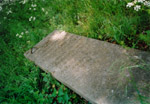

Een zwarte bladzijde uit de geschiedenis van de UB Leiden
Tentoonstelling in de Universiteitsbibliotheek te Leiden,
van 15
april tot 31 december 2003.
Samenstelling: Jos Damen
|
1. |
Rijksuniversiteit Leiden 1940-1945 | |
|
2. |
Universiteitsbibliotheek Leiden 1940-1945 | |
|
3. |
Elsa Molhuysen-Oppenheim (Groningen 1885 - Leiden 1941) | |
|
4. |
Caroline van Loen (Amsterdam 1886 - Auschwitz 1944) |
ELSA MOLHUYSEN-OPPENHEIM (GRONINGEN 1885 - LEIDEN 1941)
Elsa Rachel Oppenheim werd op 16 oktober 1885 in Groningen geboren, als
dochter van de bekende jurist Jacques Oppenheim (1849-1924). Ze studeerde
rechten in Leiden en promoveerde in 1911, net 25 jaar oud, op het
proefschrift Arbitrage en rechtspraak. Elsa ging daarna werken bij
het Vredespaleis in Den Haag, waar ze in 1916 samen met Ph.C. Molhuysen
een belangrijke catalogus publiceerde: Catalogue de la Bibliothèque du
Palais de la Paix. Op 5 augustus 1920 trouwde ze met haar mede-auteur
Molhuysen, een belangrijk man in bibliotheekland. Hun zoon Philipp
Christiaan Molhuysen jr. werd op 18 mei 1921 geboren; twee jaar later
scheidde het echtpaar. Elsa ging begin 1924 werken bij de Leidse
universiteitsbibliotheek. Ook Elsa Molhuysenn-Oppenheim werd, na 16 jaar
trouwe dienst, in november 1940 ontslagen. Zonder middelen van bestaan en
waarschijnlijk wanhopig, pleegde ze op 8 april 1941 zelfmoord in Leiden.
Elsa werd begraven op de Israëlitische Begraafplaats in Den Haag, schuin
tegenover het Vredespaleis.
| Arbitrage en rechtspraak / door Elsa Rachel Oppenheim. Proefschrift Leiden, 1911. (UBL DISL 1911: 11) | ||
 |
 |
Catalogue de la Bibliothèque du Palais de la Paix / par P.C. Molhuysen et E.R. Oppenheim. Leyde, 1916 (UBL 986 E 27) |
 |
Foto van medewerkers van de Leidse universiteitsbibliotheek in 1924. Staande vierde van links: Caroline van Loen; staande derde van links: Elsa R. Molhuysen-Oppenheim (Foto: Academisch Historisch Museum Leiden) | |
|  | Foto van de grafsteen op de Israëlitische Begraafplaats te Den Haag. De tekst luidt: Hier rust mijn lieve moeder Elsa R. Molhuysen-Oppenheim, geboren te Groningen 16 oktober 1885, overleden te Leiden 8 april 1941 | |
 |
Brief van de zoon van Elsa Oppenheim, Philipp Molhuysen jr., die de bibliothecaris Sevensma bedankt. (Brief 9 mei 1941, Archief Universiteitsbibliotheek Leiden) | |
| vorige pagina | volgende pagina |